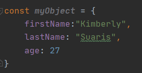
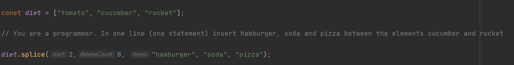

Her vil jeg skrive lidt om kendetegnene ved JavaScript, som jeg har lært på dette kursus.
const og let er hvad man skriver foran variabler, uanset datatype, for at definere hvilken scope de skal have.
Hvis det er en const, betyder det, at det er en konstant og den derfor er imutable, men værdien kan ændre sig. En const kan ikke overskrives.
Man vælger let for variabler, som skal holde sig indenfor sin egen scope. De kan for bruges til loops eller som lokal variabel.
Hvis man hverken skriver const eller let, bliver det til en global variabel. Det betyder, at variablet kan tilgås i hele programmet.
I JavaScript behøver man ikke skrive semicolon ud for hver handling, da den selv kan finde ud af at tilføje det. Der er dog nogle situationer, hvor det er nødvendigt selv at skrive dem, som i loops, og så er det en god idé at være konsistent med om man skriver dem eller ej. Jeg skriver dem altid selv, da det er blevet til en vane med andre sprog, og jeg er bange for jeg begynder at glemme dem i andre sprog. :)
JavaScript objekter deklareres lidt ligesom i Json. Man opretter 'keys' med tilhørende 'values', som det nedestående eksempel, hvor objektet 'myObject' har attributerne 'firstName', 'lastName' og 'age' b.
Som i mange andre sprog, gør JavaScript brug af Arrays. Her er det lidt anderledes, fordi man kan gemme forskellige datatyper i det samme Array. De fungerer lidt ligesom 'Stack' i Java, fordi man kan bruge metoderne pop() og push("nytElement") til at fjerne det sidste element og tilføje et element i slutningen af Array'et.
Derudover er det også godt at kende metoden splice() til Arrays, så man også kan tilføje elementer andre steder i Array'et.
